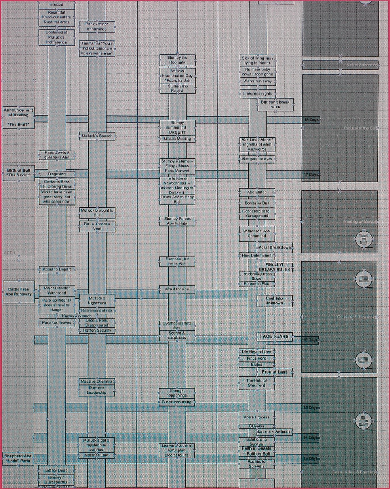

<!DOCTYPE html>
THE FORGOTTEN ODDWORLD MOVIE
Recently I have been talking with another Oddworld fan, who was kind enough to introduce me to the long-abandoned concept of an Oddworld movie. I'd like to share what he told me and in addition my own thoughts.
Plans for this movie first appeared in the early '90-s, even before the series temporarily received the arguably silly name of Epic 1, when Oddworld was still called Offworld. While some plot elements are similar to Oddysee, most of the story was wildly different. The story follows the basic structure of the Hero's Journey.
There aren't many sources where we can find info about the Movie, other than sporadic concept art and an obscure image found in a book from 2007 titled "Inside Game Design".
Full size / A picture taken from an other angle
{kind=link}
{kind=link}
There is no "official" plot posted anywhere, but a vague story can be reconstructed from the picture above. I have taken some creative liberties to make the text more enjoyable, but it should still largely follow the plot points from the flowchart.
THE PLOT
The story takes place in RuptureFarms. A female reporter called Panx or Parix (the text is far too blurry to discern, this text will call her Parix) goes to the facility to create a documentary. She sees the state of the facility and is surprised at the indifference of Molluck.
Meanwhile Abe (whose job is not explicitly mentioned, but is likely something related to handling animals as he knows that "there won't be any more baby cows"), undergoes a crisis as he realizes he wants to break free from the facility, but he's too afraid to break the rules.
This all changes when his roommate, an artificial inseminator called Stumpy is summoned before Molluck. While he is away, Abe meets with Parix and the reporter questions him. However, all is for naught, as Parix is contacted by her boss, who tells her that RuptureFarms is closing it's doors, so no one will care about her story. Stumpy returns and takes Abe to a newborn creature simply referred to as "Bull". Abe takes a liking in the creature and bonds with him. Molluck soon arrives and Abe - who was hidden away by Stumpy - overhears that the Glukkon thinks the Bull is a threat and orders the death of the animal with the intention to turn his meat turned into veal. This gives Abe the necessary kick to finally be brave enough to break the rules and decides to save Bull. Of course nothing is so easy and he accidentaly releases tons of other animals and he is thus forced to flee from the facility.
Meanwhile Stumpy overhears the conversation between Parix and her boss and becomes suspicious of the whole situation. Molluck, who is afraid of bankruptcy, declares martial law in the plant and orders Parix - who knows too much - to be caught and silenced. The reporter doesn't sense the danger and because of her clumsiness and over-confidence she can't reach her taxi in time, which leaves. Stumpy's suspicions are proven correct, when he learns about Molluck's "awful plan" to save RuptureFarms. The details of this plan are not explained, but seeing Oddysee, the most likely candidate is the "Turning Mudokons into food".
While the events in RuptureFarms are happening, Abe wanders in the wilderness where he finally realizes what his real role is. He meets the herd of the animals he accidentaly freed and bonds with them, becoming their shepherd. His faith in the beasts becomes a faith in himself.
The released part of the story ends with Abe hearing screams. He rushes to the source of the sound who turns out to be Parix, who was left for dead, but somehow survived.